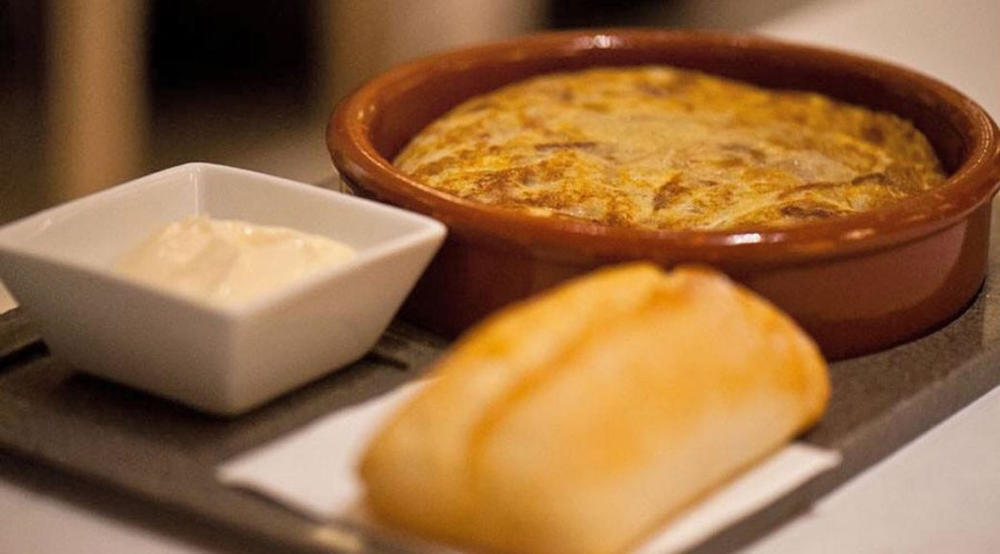
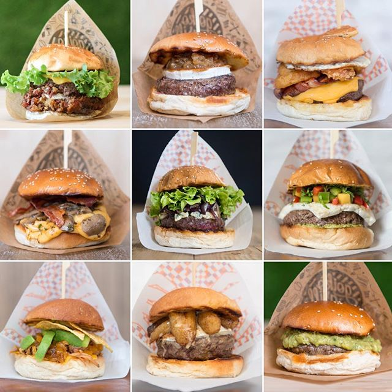
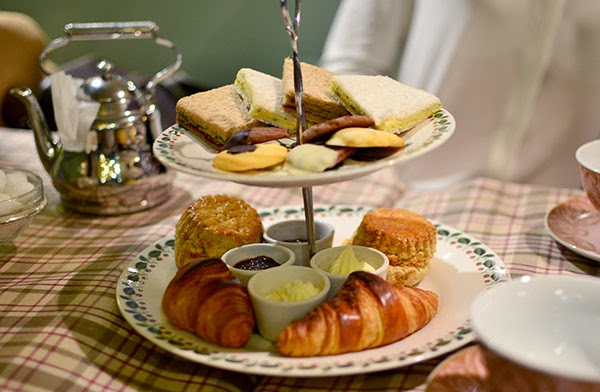
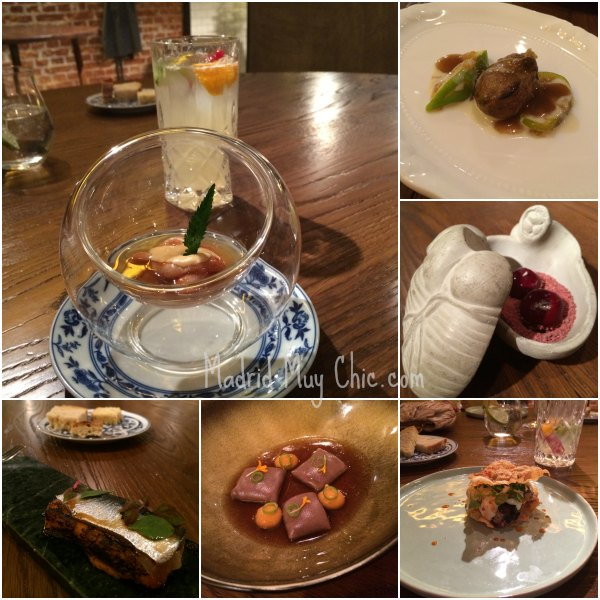
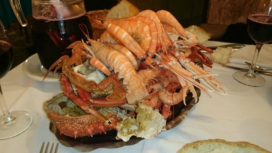

La Tortilla de Gabino
Un clásico entre clásicos en España y es la maravillosa tortilla, en este restaurante podrá probar una gran variedad.

Goiko Grill
Si lo que buscas es una hamburguesa, Goiko es tu lugar, aqui podras degustar diferentes tipos siendo la mejor la de costillas.

Living in London
Nada mejor después de una comilona que ir a un lugar tranquilo donde poder probar distintos riquisimos postres tradicionales.

DSTAgE
En este restaurante podrá probar diversos menus de degustación de comida moderna y sorprendente por un gran cocinero.

Marisqueria Ribeira do Mino
Si esta cansado carne, le recomiendo que venga a esta marisquería a comer.Del mar a su plato solo hay un paso.